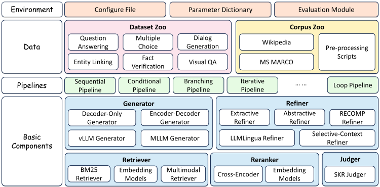
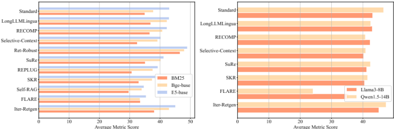
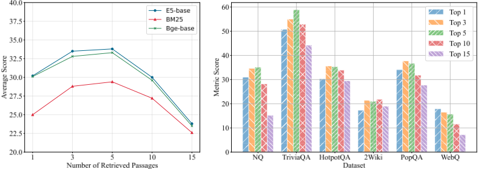
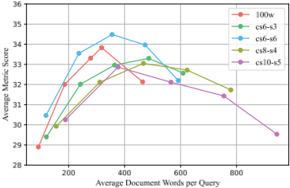
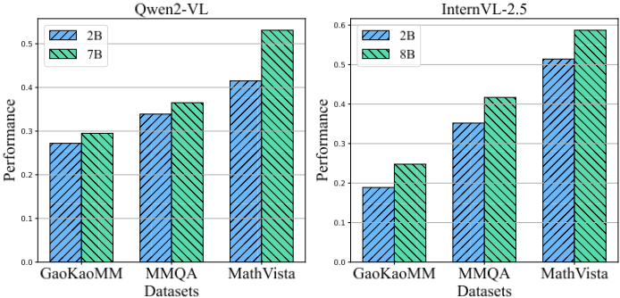

FlashRAG：面向高效检索增强生成（RAG）研究的模块化工具包
针对 RAG 研究中缺乏统一实现框架、现有工具包（LangChain、LlamaIndex 等）笨重且难以定制的痛点，论文开源了模块化工具包 FlashRAG。它将 RAG 流程解耦为 Judger、Retriever、Reranker、Refiner、Generator 五个核心组件，归纳出 Sequential、Branching、Conditional、Loop 四类流水线，内置 16 种先进 RAG 方法与 38 个标准化基准数据集，并支持多模态 RAG 与可视化 Web 界面。统一设置下的基准实验给出多项可落地结论：Standard RAG 是强基线；检索器质量影响巨大（BM25 与 E5 差距接近 10%）；检索约 5 条段落、每查询约 350-450 词检索内容时效果最佳；压缩类 Refiner 在多跳数据集上提升显著；FLARE 等迭代式方法仅在复杂多步推理问题上占优。对团队而言，这是知识库问答与 RAG 评测可直接复用的工程基础设施与选型参考。
RAG 领域新算法与模型层出不穷，但缺乏标准化实现框架，且 RAG 系统本身涉及索引、检索、生成等复杂环节，导致研究者在一致环境下复现、比较和评估不同方法既困难又耗时；现有工具包如 LangChain、LlamaIndex 通常笨重、过度封装，缺少对已有 RAG 方法的完整实现和常用检索语料，无法满足定制需求。
FlashRAG 采用三层模块化架构（环境模块、组件模块、流水线模块）：组件层提供五大组件——Judger（基于 SKR 判断查询是否需要检索）、Retriever（BM25/密集检索，FAISS 向量库，支持检索缓存）、Reranker（cross-encoder/bi-encoder，通过装饰器与任意检索器组合）、Refiner（抽取式/摘要式/困惑度式三类压缩）、Generator（集成 vLLM、FastChat 加速）；流水线层将算法流程与组件实现解耦，归纳 Sequential、Branching、Conditional、Loop 四类 RAG 流程，预实现 Self-RAG、FLARE 等 16 种方法；配套 38 个统一 JSONL 格式基准数据集、Wikipedia 下载与分块脚本、检索/生成两侧评测指标（含 token 用量统计）及可视化 Web 界面，并支持基于 Qwen、InternVL、LLaVA 与 CLIP 检索器的多模态 RAG。
工具包实现 16 种先进 RAG 方法，收集并标准化 38 个基准数据集（正文数据集章节另表述为 32 个）
统一基准下 RAG 方法显著优于直接生成基线；Standard RAG 配合先进检索器与生成器在 6 个数据集上表现稳健，是强基线
检索器质量影响显著：BM25 与 E5 检索器之间的性能差距可接近 10%
检索段落数约为 5 时性能最佳，过多或过少均导致显著下降；每查询约 350-450 词检索内容时效果最优，且重叠分块（stride）表现反而更差
三类 Refiner 压缩方法均带来显著提升，尤其在 HotpotQA、2WikiMultihopQA 等多跳数据集上
FLARE、IterRetGen 在 NQ、TriviaQA 等简单数据集上与 Standard RAG 相当或略低，在 HotpotQA 等复杂多步推理数据集上显著超越基线
更大参数模型并不必然更好：FLARE、RECOMP 等方法下 Qwen-1.5-14B 反而不如 LLaMA-3-8B，RAG 表现更可能与通用生成能力相关而非模型规模
多模态 RAG：Qwen2-VL + OpenAI-Clip 在知识密集型 VQA 上 EM 提升超过 10 分；但在 MathVista 数学推理上 Clip + Qwen2-VL-7B 反而下降 10 分
MRAG 中 MLLM 参数规模增大在三个数据集上均带来一致性能提升
相比 LangChain、LlamaIndex、Haystack 等通用工具包的笨重与过度封装，以及 FastRAG、LocalRQA、AutoRAG 等轻量工具在方法覆盖或评测上的缺失，FlashRAG 据作者所知提供了最全面的已有 RAG 方法实现（16 种）并在统一框架内给出可复现的基准报告，同时提供组件级与流水线级双重模块化、38 个标准化数据集、语料预处理脚本、多模态 RAG 支持与可视化界面，兼顾复现、对比与创新开发三重需求。
相关度级别：high
命中能力域：3.1 上下文工程与记忆 | 3.5 评测与可靠使用
理由：RAG/检索增强是 3.1 域明确列出的核心技术，本文是专门的 RAG 工具包与基准研究，直接命中团队知识库问答等工程场景；其统一评测指标、38 个基准数据集、token 用量统计与检索数量/分块策略对质量与成本的影响分析，对应 3.5 域的评测基准与成本效率优化。论文不涉及模型训练，与团队'用好模型而非训练模型'的定位完全一致。
建议动作：深入精读并做内部分享
arXiv:2405.13576v2 [cs.CL] 24 Feb 2025
Jiajie Jin Yutao Zhu Guanting Dong Yuyao Zhang Xinyu Yang Chenghao Zhang Tong Zhao Zhao Yang Zhicheng Dou ∗ Ji-Rong Wen
中国人民大学高瓴人工智能学院
dou}@ruc.edu.cn, yutaozhu94@gmail.com
∗ {jinjiajie,
主页 数据集 数据集 代码
随着大语言模型（LLMs）和多模态大语言模型（MLLMs）的出现，检索增强生成（RAG）的潜力引起了广泛的研究关注。为增强 RAG 系统的不同方面，各种新颖的算法和模型被相继提出。然而，由于缺乏标准化的实现框架，加之 RAG 流程本身固有的复杂性，研究人员难以在一致的环境中比较和评估这些方法，且这一过程十分耗时。现有的 RAG 工具包，如 LangChain 和 LlamaIndex，虽然可用，但往往较为笨重且缺乏灵活性，无法满足研究人员的定制化需求。为应对这一挑战，我们开发了 FlashRAG，一个高效且模块化的开源工具包，旨在帮助研究人员在统一的框架内复现和比较现有的 RAG 方法，并开发他们自己的算法。我们的工具包已实现了 16 种先进的 RAG 方法，并收集和整理了 38 个基准测试数据集。它具有多种特性，包括可定制的模块化框架、多模态 RAG 能力、丰富的预实现 RAG 工作集合、全面的数据集、高效的辅助预处理脚本，以及广泛且标准的评估指标。
在大语言模型（LLMs）时代，检索增强生成（RAG）[1, 2] 已成为一种通过利用外部知识库来缓解幻觉问题的有效解决方案 [3, 4, 5]。RAG 的广泛应用和潜力吸引了大量研究关注 [6, 7, 8]。然而，随着近年来大量新算法和新模型的涌现，在一致的设置下比较和评估这些方法变得越来越具有挑战性。
许多现有方法并非开源，或者需要特定的配置才能实现，这使得将其适配到自定义数据和创新组件变得困难。数据集和检索语料库往往各不相同，资源分散且需要大量的预处理工作。此外，RAG 系统固有的复杂性——涉及索引、检索和生成——通常需要大量的技术实现。虽然已有一些现有的 RAG 工具包，如 LangChain [9] 和 LlamaIndex [10]，但它们通常复杂且繁琐，限制了研究人员根据自身特定需求定制流程。因此，目前迫切需要一个统一的、面向研究的 RAG 工具包，以简化方法开发并促进比较研究。
∗ 通讯作者。
预印本。审稿中。
| Toolkit | Automatic Evaluation | Multimodal | Corpus Helper | # Provided Dataset | # Support Methods |
|---|---|---|---|---|---|
| Langchain [9] | ✕ | ✓ | ✓ | - | 2 |
| LlamaIndex [10] | ✓ | ✓ | ✓ | - | 2 |
| Haystack [18] | ✓ | ✕ | ✕ | - | - |
| FastRAG [19] | ✕ | ✕ | ✕ | 2 | 1 |
| LocalRQA [20] | ✓ | ✕ | ✕ | 3 | - |
| AutoRAG [21] | ✓ | ✕ | ✕ | 4 | 2 |
| RAGLab [22] | ✓ | ✕ | ✓ | 10 | 6 |
| FlashRAG (ours) | ✓ | ✓ | ✓ | 38 | 16 |
| Toolkit | Automatic Evaluation | Multimodal | Corpus Helper | # Provided Dataset | # Support Methods |
为了解决上述问题，我们推出了 FlashRAG，这是一个开源库，使研究人员能够在 RAG 领域高效地进行复现、基准测试和创新。该库提供了用于复现现有工作的内置流水线、用于构建定制化 RAG 工作流程的可定制组件，以及对经过整理的数据集和语料库的便捷访问，以加速研究进程。与现有工具包相比，FlashRAG 提供了对研究人员更加友好的解决方案。总而言之，我们的 FlashRAG 库的主要特性包括：
全面、可定制且高效的模块化 RAG 框架。FlashRAG 在组件和流水线两个层面都提供了高度模块化的设置，包含 5 个核心模块和 16 个多样化的 RAG 子组件，它们可以独立集成或组合成流水线。此外，我们还提供了 9 种标准化的 RAG 流程以及辅助脚本，用于诸如下载和分块维基百科以构建语料库、构建检索索引、准备检索结果等任务，从而形成一个高效且易于使用的端到端 RAG 框架。
预实现的高级 RAG 算法。据我们所知，FlashRAG 提供了对现有工作最全面的实现，包括 16 种高级 RAG 算法，例如 Self-RAG [11] 和 FLARE [12]，涵盖顺序式、条件式、分支式和循环式 RAG 类别。这些方法在统一的框架内进行评估，并提供基准测试报告，支持透明的评估和比较。更多方法将持续被纳入我们的库中。
支持多模态 RAG 场景。FlashRAG 通过集成主流的多模态大语言模型（MLLMs），如 Qwen [13]、InternVL [14] 和 LLaVA [15, 16]，以及多种基于 CLIP 的检索器 [17]，支持全面的多模态 RAG 部署。该框架为研究人员在纯文本和多模态两种场景下提供了广泛的技术支持，并配备了多个广泛使用的 MRAG 基准测试数据集，用于系统性评估。
全面的基准测试数据集。为了提高 RAG 研究中数据集的一致性和实用性，我们收集了 38 个常用数据集并对其格式进行了标准化。其中一些数据集，如 WikiAsp [23] 和 NarrativeQA [24]，已针对 RAG 场景进行了特定调整以确保一致性。这些数据集可在 HuggingFace 平台上直接获取，便于轻松访问和应用。
用于 RAG 实验的可视化网页界面。FlashRAG 具有直观的网页界面，可对完整的 RAG 流水线进行可视化。用户可以查看从检索到答案生成各步骤的中间结果，同时进行一键式参数调优和自动基准测试评估。该界面支持无缝的语料库加载、实时的组件可视化以及全面的流水线评估，使 RAG 实验更加透明和高效。
幻觉和事实性错误是现有大语言模型（LLMs）面临的重大挑战 [3, 25, 26, 27]。为了解决这些问题，检索增强生成（RAG）应运而生。典型的 RAG 架构包括一个检索器（retriever）和一个生成器（generator，例如 LLMs）。检索器根据用户的查询从外部知识库中检索相关段落 [28, 29, 30]，随后生成器将这些段落作为输入的一部分用于生成。通过利用外部知识，生成的质量可以得到显著提升 [31, 32, 33, 34]。随着 RAG 领域研究的不断深入，各种额外的组件被引入，以进一步提升 RAG 系统的有效性和鲁棒性 [6, 35, 36]。这促使我们开发一个易于获取、对用户友好的工具包，专门用于支持和促进 RAG 研究。
2
RAG 通常涉及复杂的组件和前期工程任务，例如语料库构建和生成器配置。由于缺乏专门面向研究的 RAG 库，现有的开源代码往往采用带有特定环境配置的自定义实现，这阻碍了代码的可复用性以及对新设置的适配。
近期的发展中出现了若干开源 RAG 工具包，例如 Langchain [9]、LlamaIndex [10] 和 Haystack [18]。这些库提供了便于与大语言模型（LLMs）交互的高级 API，例如向量数据库和嵌入模型，从而简化了 RAG 流程的执行。然而，这些工具包通常无法满足研究社区的需求。它们往往缺乏对现有 RAG 方法的全面实现，不提供对常用检索语料库的访问，而且通常较为笨重且过度封装，这掩盖了细节并使定制变得复杂。
为了应对这些挑战，更轻量、更具适应性的 RAG 工具包应运而生。例如，FastRAG [19] 基于 Haystack 的 API 构建，为精选的一系列方法和数据集提供优化支持。LocalRQA [20] 专注于 RAG 流程的训练阶段，为各种组件（如检索器和生成器）提供训练脚本。AutoRAG [21] 采用模块化方法，将每个 RAG 组件视为一个节点，通过相互连接构成整体流程，但它缺乏对现有 RAG 方法及其评估的实现。相比之下，我们的 FlashRAG 工具包提供了各种各样的 RAG 组件和预先实现的方法，只需几行代码便可在各种设置下简便地复现现有的 RAG 研究。此外，我们还提供了丰富的资源池，包括大量经过处理的数据集，以及用于获取和预处理广泛使用语料库的脚本，显著减少了研究人员所需的准备时间。
FlashRAG 的设计初衷主要是支持 RAG 研究，但其能力并不局限于这一领域。如图 1 所示，FlashRAG 由三个分层模块组成：环境模块（environment module）、组件模块（component module）和流水线模块（pipeline module）。环境模块是整个工具包的基础，为实验提供数据集、超参数和评估指标等必要资源。在环境模块的基础上，组件模块由各种 RAG 组件构成，每个组件均针对特定功能（例如检索和生成）而定制。流水线模块将这些组件整合为完整的 RAG 流程。在本文中，我们将介绍组件模块和流水线模块。更多细节可参阅我们工具库的文档。
FlashRAG is organized into five main components, each designed to function autonomously or within a combined application, enhancing both flexibility and specificity in the RAG process.
Judger functions as a preliminary component that determines whether a query needs retrieval [37, 38, 39]. Given the limited studies in this domain, we implement a judger based on SKR [37], which utilizes LLM self-knowledge data to determine the necessity of retrieval.
Retriever implementations are extensively covered by our toolkit. For sparse retrieval, we integrate the Pyserini library [40] to support the use of BM25 [41]. For dense retrieval, we consider various BERT-based embedding models such as DPR [42], E5 [43], and BGE [44], along with T5-based models such as ANCE [45]. We employ FAISS [46, 47] for efficient vector database operations and utilize the HuggingFace datasets library to enhance corpus loading speed. Additionally, FlashRAG

includes a 'retrieval cache' feature, allowing for the reuse of retrieval results and supporting custom formats from non-open source retrievers.
Reranker aims at refining the order of retrieved results to improve retrieval accuracy. FlashRAG supports many cross-encoder models, such as bge-reranker [44] and jina-reranker, and facilitates the use of bi-encoder models such as E5 for scenarios using embedding models for reranking. Rerankers can be seamlessly integrated with any retriever through a decorator, enabling simple and flexible combinations.
Refiner processes input text to optimize it for generation by reducing token usage and noise. We have implemented three types of refiners: extractive, abstractive, perplexity-based [48, 49, 50]. Each type employs different methods to handle retrieved passages, such as semantic extraction or summarization [51], utilizing both dedicated models like RECOMP [52] and general models available on HuggingFace.
Generator is the final component in the RAG process. We integrate two advanced LLM acceleration libraries, vLLM [53] and FastChat [54], supporting a wide range of LLMs. Furthermore, we provide the native interface of the Transformers library [55] to enhance robustness. The module also includes encoder-decoder models like Flan-T5 [56] and utilizes fusion-in-decoder techniques [57] to enhance processing efficiency with retrieved content.
在多样化组件的基础上，FlashRAG 支持将 RAG 过程的算法流程与各组件的具体实现解耦。在构建流水线时，用户只需确定 RAG 过程所需的组件以及这些组件之间的数据流逻辑。流水线将自动执行相应的 RAG 过程，并同时提供中间结果和评估结果。
为了系统地执行各种 RAG 任务的运行逻辑，我们对 RAG 相关文献进行了深入分析。遵循近期一篇关于 RAG 的综述 [6]，我们识别出四种主要的 RAG 过程流类型：顺序式（Sequential）、分支式（Branching）、条件式（Conditional）和循环式（Loop）。
顺序式流水线实现了一种线性的执行路径，通常表示为“query → retriever → post-retrieval (reranker, refiner) → generator”。用户完成配置后，该工具库会自动加载所需的组件及其对应的处理逻辑。
分支式流水线针对单个查询并行执行多条路径（通常每条检索到的段落对应一条路径），并合并来自所有路径的结果以形成最终输出。目前，FlashRAG 支持两种先进的分支方法：REPLUG 流水线 [97] 和 SuRe 流水线 [98]。REPLUG 流水线并行处理每条检索到的段落，并结合所有段落的生成概率来产生最终答案。SuRe 流水线从每条检索到的段落生成一个候选答案，然后对所有候选答案进行排序。
4
| Task | Dataset Name | Knowledge Source | # Train | # Dev | # Test |
|---|---|---|---|---|---|
| QA | NQ [58] | Wiki | 79,168 | 8,757 | 3,610 |
| TriviaQA [59] | Wiki &Web | 78,785 | 8,837 | 11,313 | |
| PopQA [60] | Wiki | - | - | 14,267 | |
| SQuAD [61] | Wiki | 87,599 | 10,570 | - | |
| MSMARCO-QA [62] | Web | 808,731 | 101,093 | - | |
| NarrativeQA [24] | Books, movie scripts | 32,747 | 3,461 | 10,557 | |
| WikiQA [63] | Wiki | 20,360 | 2,733 | 6,165 | |
| WebQuestions [64] | Google Freebase | 3,778 | - | 2,032 | |
| AmbigQA [65, 58] | Wiki | 10,036 | 2,002 | - | |
| SIQA [66] | - | 33,410 | 1,954 | - | |
| CommonsenseQA [67] | - | 9,741 | 1,221 | - | |
| BoolQ [68] | Wiki | 9,427 | 3,270 | - | |
| PIQA [69] | - | 16,113 | 1,838 | - | |
| Fermi [70] | Wiki | 8,000 | 1,000 | 1,000 | |
| HotpotQA [71] | Wiki | 90,447 | 7,405 | - | |
| 2WikiMultiHopQA [72] | Wiki | 15,000 | 12,576 | - | |
| Multi-Hop QA | Musique [73] | Wiki | 19,938 | 2,417 | - |
| Bamboogle [74] | Wiki | - | - | 125 | |
| StrategyQA [75] | Wiki | 2,290 | - | - | |
| ASQA [76] | Wiki | 4,353 | 948 | - | |
| Long-Form QA | ELI5 [77] | 272,634 | 1,507 | - | |
| WikiPassageQA [78] | Wiki | 3,332 | 417 | 416 | |
| MMLU[79, 80] | - | 99,842 | 1,531 | 14,042 | |
| TruthfulQA [81] | Wiki | - | 817 | - | |
| HellaSwag [82] | ActivityNet | 39,905 | 10,042 | - | |
| Multiple-Choice | ARC [83] | - | 3,370 | 869 | 3,548 |
| OpenBookQA [84] | - | 4,957 | 500 | 500 | |
| QuaRTz [85] | - | 2,696 | 384 | 784 | |
| AIDA CoNLL-YAGO [86, 87] | Wiki &Freebase | 18,395 | 4,784 | - | |
| Entity linking | WNED [88, 87] | Wiki | - | 8,995 | - |
| T-REx [89, 87] | DBPedia | 2,284,168 | 5,000 | - | |
| Slot Filling | Zero-shot RE [90, 87] | Wiki | 147,909 | 3,724 | - |
| Fact Verification | FEVER [91, 87] | Wiki | 104,966 | 10,444 | - |
| Dialog Generation | WOW[92, 87] | Wiki | 63,734 | 3,054 | - |
| Open-domain Summarization ∗ | WikiAsp [23] | Wiki | 300,636 | 37,046 | 37,368 |
| In-domain QA | DomainRAG [93] | Web pages of RUC | - | - | 485 |
| Gaokao-MM [94] | - | 519 | - | 127 | |
| Vision QA | MultimodalQA [95] | Wiki | 2,099 | 230 | - |
| MathVista [96] | - | - | - | - |
| Task | Dataset Name | Knowledge Source | # Train | # Dev | # Test |
| Method | Optimize component | Pipeline type | NQ (EM) | TriviaQA (EM) | HotpotQA (F1) | 2Wiki (F1) | PopQA (F1) | WebQA (EM) |
|---|---|---|---|---|---|---|---|---|
| Naive Generation | - | Sequential | 22.6 | 55.7 | 28.4 | 33.9 | 21.7 | 18.8 |
| Standard RAG | - | Sequential | 35.1 | 58.8 | 35.3 | 21 | 36.7 | 15.7 |
| AAR [101] | Retriever | Sequential | 30.1 | 56.8 | 33.4 | 19.8 | 36.1 | 16.1 |
| LongLLMLingua [49] | Refiner | Sequential | 32.2 | 59.2 | 37.5 | 25 | 38.7 | 17.5 |
| RECOMP-abstractive [52] | Refiner | Sequential | 33.1 | 56.4 | 37.5 | 32.4 | 39.9 | 20.2 |
| Selective-Context [50] | Refiner | Sequential | 30.5 | 55.6 | 34.4 | 18.5 | 33.5 | 17.3 |
| Trace [102] | Refiner | Sequential | 30.7 | 50.2 | 34 | 15.5 | 37.4 | 19.9 |
| Spring [103] | Generator | Sequential | 37.9 | 64.6 | 42.6 | 37.3 | 54.8 | 27.7 |
| Ret-Robust ∗ [104] | Generator | Sequential | 42.9 | 68.2 | 35.8 | 43.4 | 57.2 | 33.7 |
| SuRe [98] | Flow | Branching | 37.1 | 53.2 | 33.4 | 20.6 | 48.1 | 24.2 |
| REPLUG [97] | Generator | Branching | 28.9 | 57.7 | 31.2 | 21.1 | 27.8 | 20.2 |
| SKR [37] | Judger | Conditional | 33.2 | 56 | 32.4 | 23.4 | 31.7 | 17 |
| Adaptive-RAG [38] | Judger | Conditional | 35.1 | 56.6 | 39.1 | 28.4 | 40.4 | 16 |
| Self-RAG ∗ [11] | Flow | Loop | 36.4 | 38.2 | 29.6 | 25.1 | 32.7 | 21.9 |
| FLARE [12] | Flow | Loop | 22.5 | 55.8 | 28 | 33.9 | 20.7 | 20.2 |
| Iter-RetGen [99], ITRG [100] | Flow | Loop | 36.8 | 60.1 | 38.3 | 21.6 | 37.9 | 18.2 |
| IRCoT [105] | Flow | Loop | 33.3 | 56.9 | 41.5 | 32.4 | 45.6 | 20.7 |
| RQRAG [106] | Flow | Loop | 32.6 | 52.5 | 33.5 | 35.8 | 46.4 | 26.2 |
| Method | Optimize component | Pipeline type | NQ (EM) | TriviaQA (EM) | HotpotQA (F1) | 2Wiki (F1) | PopQA (F1) | WebQA (EM) |
条件式流水线利用判断器（judger）根据预定义的标准将查询引导至不同的执行路径。需要检索的查询遵循标准的顺序式流程，而其他查询则绕过检索，直接进入生成阶段。FlashRAG 提供工具函数，可根据 judger 的决策对输入数据集进行拆分与合并，从而确保批处理并提升流水线效率。此外，条件式流水线支持与各种类型的流水线集成，能够根据 judger 的结果实现动态执行。
循环式流水线涉及检索与生成过程之间的复杂交互，通常包含多个检索与生成的循环。与前几种流水线相比，这种流水线更为灵活，因此往往能取得更好的性能。FlashRAG 目前支持四种典型方法，包括 Iterative [99, 100]、Self-Ask [74]、Self-RAG [11] 和 FLARE [12]。
我们收集并预处理了 32 个基准测试（benchmark）数据集，涵盖了现有 RAG 研究中所使用的广泛类型。这些数据集的统计信息如表 2 所示。每个数据集均已被标准化为统一的 JSONL 格式，其中每条数据包含四个字段：ID、问题、标准答案和元数据。对于 MMLU [79, 80] 等多选题数据集，还额外提供了 'choices' 字段作为选项。这些处理后的数据集可在 HuggingFace 上直接获取。有关数据集处理的更多细节见附录 B。
除数据集外，我们还提供了多种数据集筛选工具，使用户能够根据自身需求对数据集进行定制。例如，用户可以随机或按顺序选取一定数量的样本用于评估，也可以根据数据集的元数据筛选子集。这些方法被统一整合在一个数据集加载函数中，提供了统一的用户界面。用户也可以自行实现自定义的筛选函数。
用于检索的语料库，也称为知识库，对于准备实验同样至关重要。通常使用的是 Wikipedia 段落和 MS MARCO 段落。
6
Wikipedia 段落：Wikipedia 段落是来自英文 Wikipedia 页面的段落集合，在 KILT [87] 等数据集中被广泛用作知识来源。获取 Wikipedia 语料库的过程包括下载 XML 格式的快照、清理文本中的 HTML 标签、提取文本内容，并将其切分为适合检索的段落。
在研究中，人们常常使用不同版本的 Wikipedia，这增加了复现的难度。我们提供了易于使用的脚本，可自动下载并预处理任何所需的 Wikipedia 版本。此外，我们还提供了多种分块函数以支持自定义切分，从而能够与标准语料库或先前使用的语料库对齐。我们的工具包中收录了 DPR [42] 中广泛使用的、日期为 2018 年 12 月 20 日的 Wikipedia 转储，作为基础资源。
MS MARCO 段落 [62]：该数据集由来自 Bing 搜索引擎的 880 万个段落组成。与 Wikipedia 转储相比，它包含的段落较少，并且已经过预处理。该数据集已在 HuggingFace 上发布，因此我们在库中提供了直接链接以便于访问。
FlashRAG 支持多种常用的评估指标，用于衡量 RAG 过程的质量。根据评估对象的不同，这些指标可以分为检索方面的指标和生成方面的指标。
检索方面指标：FlashRAG 支持四种指标，包括 recall@k、precision@k、F1@k 以及平均精度均值（MAP），用于评估检索质量。与独立检索系统中的评估不同，RAG 过程中检索到的段落往往缺乏金标准标签（例如相关或不相关的标记）。因此，我们将检索到的段落中是否包含金标准答案作为相关性的判断依据。其他指标可以通过继承现有指标并修改计算方法来实现。
生成方面指标：为评估生成质量，FlashRAG 支持五种指标：词元级 F1 分数、精确匹配、准确率、BLEU [107] 和 ROUGE-L [108]。此外，FlashRAG 还会评估生成过程中使用的词元数量，以分析成本效益。
为支持自定义评估指标，FlashRAG 为用户提供了指标模板。由于我们的库会自动保存中间结果，用户可以方便地对来自中间组件的结果进行评估，例如分析精炼前后的词元使用情况，或比较多个检索轮次之间的精确率。
为了验证 FlashRAG 的有效性，我们开展了一系列实验，以提供可复现的基准测试结果并促进进一步的探索。在主实验中，我们默认采用最新的 LLaMA-3-8B-instruct [109] 模型作为生成器，并采用 E5-base-v2 作为检索器。一些方法可能会在 RAG 的不同组件中微调其自身的模型，我们在附录 A 中提供了相关细节。
方法。我们评估了所有受支持的 RAG 方法的性能。这些方法根据其主要旨在优化的 RAG 组件进行分类：AAR [101] 旨在优化检索器；LongLLMLingua [49]、RECOMP [52]、Selective-Context [50] 和 Trace [102] 专注于对输入进行精炼和压缩；Ret-Robust [104]、Spring [103] 和 REPLUG [97] 旨在增强生成器及其解码方法；SKR [37] 和 AdaptiveRAG [38] 引入判断器（judger）来决定针对查询进行检索的必要性；SuRe [98]、SelfRAG [11]、FLARE [12]、Iter-RetGen [99]、RQRAG [106] 和 ITRG [100] 则优化整个 RAG 流程，包括使用多轮检索和生成过程。
实验结果如表 3 所示。总体而言，RAG 方法显著优于直接生成基线，这清楚地表明了将外部知识融入生成过程的益处。我们进一步得到以下观察：(1) 配备先进检索器和生成器的 Standard RAG 是一个强大的基线，在六个数据集上均展现出稳健的性能。(2) AAR 通过微调 contriever 模型来改进检索器，在多个数据集上取得了与 E5 基线相当的结果。(3) 采用精炼器（refiner）的三种方法均表现出显著提升，尤其是在 HotpotQA 和 2WikiMultihopQA 等多跳数据集上。这可能是因为复杂问题会导致段落检索的准确性下降，引入更多噪声，从而凸显了对精炼器进行优化的必要性。(4) 在生成器优化方法方面，Ret-Robust 通过 LoRA [110] 微调 LLaMA-2-13B 模型，显著增强了生成器理解所检索段落的能力，并优于其他免训练方法。(5) 优化 RAG 流程的有效性因数据集的复杂程度而异。在 NQ 和 TriviaQA 等较简单的数据集上，FLARE 和 IterRetGen 的表现与 Standard RAG 相当或略低。相比之下，对于需要多步推理的更复杂数据集（如 HotpotQA），这些方法相比基线展现出大幅提升。这表明自适应检索方法在应对复杂问题时尤为有利，但对于较简单的任务，它们可能带来更高的运行成本而收益有限。
7

在 RAG 中，检索器和生成器的选择对最终性能起着至关重要的作用。因此，我们进行了一项实验来探究它们的影响。需要注意的是，我们未纳入那些需要特定检索器或生成器的方法（例如，Self-RAG 需要经过训练的模型）。
如图 2 左侧部分所示，大多数方法对检索质量较为敏感。使用 BM25 检索器与 E5 检索器之间的性能差距可接近 10%。这一差距可能是由于 BM25 检索到的段落中存在更多噪声，从而以无关信息干扰了生成过程。相比之下，RECOMP 等压缩方法在各种检索器下均表现出更好的鲁棒性，这表明压缩能够有效缓解噪声。此外，通过对生成器进行微调，这种鲁棒性可以得到进一步增强。例如，Ret-Robust 引入了一种针对特定生成器的训练策略，能够有效地将无关段落的影响降至最低。
我们还通过使用两个不同规模的模型（Qwen-1.5-14B 和 LLaMA-3-8B）探究了生成器的影响。有趣的是，较大的模型并不能始终优于较小的模型。例如，在 FLARE 和 RECOMP 等方法中，较小的模型反而取得了更好的性能。鉴于 LLaMA-3-8B 在许多公开基准测试（benchmark）中的表现优于 Qwen-1.5-14B，这表明大语言模型（LLM）的 RAG 性能可能与其通用生成能力高度相关，而非其规模大小。这一观察结果凸显了 LLM 性能评估的复杂性，表明除规模之外的其他因素（例如模型架构或训练数据质量）也可能发挥重要作用。
8

在 RAG 中，检索到的段落的数量和质量都会显著影响最终答案。然而，现有研究通常采用预设的检索器和固定数量的检索段落，这限制了进一步的探索。为了全面考察检索过程对 RAG 结果的影响，我们进行了一系列实验。图 3 展示了使用不同数量检索段落的结果。
如左侧部分所示，使用大约五个检索段落时取得了最佳性能。段落数量过多或过少都会导致性能大幅下降。这一趋势在各种检索器（包括稠密和稀疏方法）中均保持一致。此外，当使用更多段落时，不同检索器之间的性能差异趋于减小，这表明检索内容中的噪声有所增加。相比之下，当仅使用 top-1 结果时，稠密方法（即 E5 和 BGE）与 BM25 之间存在显著差距，这表明在段落数量较少的情况下，检索器的质量成为影响最终性能的更关键因素。
在右侧部分中，我们分析了检索段落数量对不同数据集的影响。对于大多数数据集，使用 top-5 检索结果时取得了最佳性能，这表明该设置可能在信息丰富性与潜在噪声之间提供了理想的平衡。这一发现凸显了调整检索数量以在各种数据集上优化 RAG 过程有效性的重要性。
RAG 研究中的一个关键问题是确定最优的分块（chunking）方法。遵循先前在 Wikipedia 预处理方面的研究 [111, 112]，我们采用多种分块方法将最新版本的 Wikipedia dump 切分为不同的变体，并探索其相应的性能。2 我们实验了四种不同的分块大小：六句话、八句话、十句话和 100 个词。每种配置均使用设置为分块大小一半的步长（stride）。此外，我们还探索了采用完整分块步长（即不重叠）的六句话分块，以评估步长变化对性能的影响。为了控制输入词数，我们对检索段落的数量进行了调节。相关统计信息如图 4 左侧部分所示。
图 4 右侧部分展示了结果。我们可以观察到，无论分块大小如何，当每个查询对应约 350-450 个词的检索结果时，通常能取得最优性能。这表明在分块大小较大时，减少段落数量可能是有益的。然而，在六句话分块内部的比较显示，重叠分块往往会产生较差的性能。这凸显了分块大小和步长二者对 RAG 有效性的细微影响。
2 Wikipedia Dump: https://dumps.wikimedia.org/enwiki/
9
| Chunk Size | Stride | # Passages | Avg. Len |
|---|---|---|---|
| 6 sents | 3 sents | 38.4M | 127.7 |
| 6 sents | 6 sents | 23.4M | 115.6 |
| 8 sents | 4 sents | 28.9M | 163.5 |
| 10 sents | 5 sents | 23.3M | 196.9 |
| 100 words | - | 30.1M | 100.5 |
| Chunk Size | Stride | # Passages | Avg. Len |

| MLLM.MLLM | Retriever.Retriever | Gaokao-MM.Acc | MultimodalQA.EM | MultimodalQA.F1 | MultimodalQA.Acc | MathVista.EM | MathVista.F1 | MathVista.Acc |
|---|---|---|---|---|---|---|---|---|
| Llava-7B | - | 0.142 | 0.317 | 0.401 | 0.739 | 0.262 | 0.162 | 0.389 |
| Llava-ov-7B | - | 0.374 | 0.743 | 0.752 | 0.761 | 0.581 | 0.457 | 0.649 |
| Qwen2-vl-7B | - | 0.299 | 0.304 | 0.319 | 0.352 | 0.57 | 0.449 | 0.644 |
| Qwen2-vl-7B | openai-clip | 0.339 | 0.348 | 0.351 | 0.352 | 0.444 | 0.344 | 0.535 |
| Qwen2-vl-7B | jina-clip-v2 | 0.343 | 0.404 | 0.41 | 0.426 | 0.471 | 0.356 | 0.552 |
| Qwen2-vl-7B | chinese-clip | 0.295 | 0.404 | 0.41 | 0.422 | 0.427 | 0.337 | 0.538 |
| Internvl2.5-8B | - | 0.22 | 0.343 | 0.349 | 0.357 | 0.569 | 0.456 | 0.692 |
| Internvl2.5-8B | openai-clip | 0.287 | 0.439 | 0.447 | 0.452 | 0.45 | 0.347 | 0.58 |
| Internvl2.5-8B | jina-clip-v2 | 0.287 | 0.426 | 0.438 | 0.448 | 0.485 | 0.372 | 0.61 |
| Internvl2.5-8B | chinese-clip | 0.248 | 0.47 | 0.481 | 0.5 | 0.461 | 0.354 | 0.585 |
| MLLM.MLLM | Retriever.Retriever | Gaokao-MM.Acc | MultimodalQA.EM | MultimodalQA.F1 | MultimodalQA.Acc | MathVista.EM | MathVista.F1 | MathVista.Acc |
为了进一步探究多模态检索增强技术与不同多模态大语言模型（MLLM）骨干模型相结合时的性能表现，表 4 展示了各种多模态检索增强生成（MRAG）配置在三个广泛使用的视觉问答（VQA）数据集上的总体结果。对于每个问题，我们从相应的检索语料库中检索 Top1 相关的图文对。具体而言，我们得出以下关键发现：
MRAG 在知识密集型任务中为各 MLLM 带来稳定的性能提升。在知识密集型多模态问答数据集中，多模态检索知识显著提升了 MLLM 基座模型的性能，尤其是 Qwen2-VL 与 OpenAI-Clip 的组合，其在精确匹配（EM）分数上带来了超过 10 分的提升。聚焦于 Gaokao MM 的多维推理评估，无论采用 Qwen2-VL-7B 还是 InternVL-2.5-8B，多模态检索知识同样带来了稳定的增强。这证实了多模态检索增强能够在通用知识推理领域有效补充 MLLM 的能力。
MRAG 在多模态数学推理方面仍然存在困难。然而，当聚焦于复杂的多模态数学推理任务时，多模态检索知识并未带来性能提升，反而产生了明显的负面影响。例如，Clip 与 Qwen2 vL 7B 的组合甚至导致准确率下降 10 分。这一观察与 AR-MCTS [113] 的发现一致，表明在数学推理这一专门领域中，域内多模态检索增强方法仍然表现出显著的局限性。
| MLLM. | Retrieval Type. | Retriever. | Top-K. | GaoKao-MM.Acc | Multimodal QA.EM | Multimodal QA.F1 |
|---|---|---|---|---|---|---|
| Qwen2-vl-7B | 1 | 0.295 | 0.352 | 0.361 | ||
| Qwen2-vl-7B | 2 | 0.335 | 0.335 | 0.343 | ||
| Qwen2-vl-7B | Multimodal | Clip | 3 | 0.307 | 0.348 | 0.362 |
| Qwen2-vl-7B | 5 | 0.358 | 0.374 | 0.389 | ||
| BM25 | 1 | 0.35 | 0.335 | 0.344 | ||
| 2 | 0.307 | 0.343 | 0.36 | |||
| Text-only | 3 | 0.307 | 0.357 | 0.376 | ||
| 5 | 0.358 | 0.365 | 0.391 | |||
| Hybridmodal | 1 | 0.35 | 0.361 | 0.371 | ||
| BM25 + Clip | 2 | 0.307 | 0.374 | 0.391 | ||
| 3 | 0.307 | 0.378 | 0.396 | |||
| Internvl2.5-8B | Multimodal | 1 | 0.248 | 0.404 | 0.412 | |
| Internvl2.5-8B | 2 | 0.26 | 0.43 | 0.462 | ||
| Internvl2.5-8B | Clip | 3 | 0.291 | 0.443 | 0.463 | |
| Internvl2.5-8B | 5 | 0.264 | 0.443 | 0.462 | ||
| BM25 | 1 | 0.287 | 0.4 | 0.408 | ||
| 2 | 0.272 | 0.37 | 0.381 | |||
| Text-only | 3 | 0.26 | 0.383 | 0.396 | ||
| 5 | 0.248 | 0.4 | 0.417 | |||
| 1 | 0.287 | 0.417 | 0.432 | |||
| Hybridmodal | BM25 + Clip | 2 | 0.272 | 0.413 | 0.436 | |
| 3 | 0.26 | 0.452 | 0.472 |
| MLLM. | Retrieval Type. | Retriever. | Top-K. | GaoKao-MM.Acc | Multimodal QA.EM | Multimodal QA.F1 |
为了探究不同检索类型的影响，表 4 对 MRAG 中三种常用检索器进行了比较：OpenAI-Clip 3、Jina-Clip-v2 和 Chinese-Clip。
检索器的语言一致性并非决定 MRAG 表现的关键因素。在 GaokaoMM 评测中，每种检索器都能带来一致的提升。值得注意的是，Chinese-Clip 并未取得最高的增益，这凸显出多模态检索器的选择不应仅仅依赖于语言上的一致性。在 Multimodal QA 中也出现了类似的发现：所有检索器都表现出稳定的增强，其中语言不一致的 Chinese-Clip 反而带来了最显著的性能提升。
然而，在 MathVista 中，由不同检索器检索到的知识会显著影响推理性能。我们推测，检索到的知识可能在某种程度上破坏了解题推理的连贯性 [114, 115]。
为了全面评估多模态检索文档数量对性能的影响，我们在三种不同的设置下使用前 1、2、3 和 5 篇文档进行了评估：纯文本检索（BM25）、多模态检索（Clip）以及混合模态检索（BM25+Clip）。
我们的研究结果表明，在 Gaokao-MM 和 MultimodalQA 两项评估中，随着文档数量的增加（从 Top-1 到 Top-3），使用 Clip 进行多模态检索通常能带来更为一致的提升。然而，一旦文档数量超过某个阈值（3），MRAG 的性能可能变得不稳定。在纯文本检索和混合模态检索的情况下，MRAG 在 MultimodalQA 中随着文档数量的增加仍持续表现出稳定的提升。相反，对于 Gaokao-MM，增加更多文档并不能持续提升性能，这表明复杂推理数据集对知识的可用性尤为敏感。
3 模型卡片：https://huggingface.co/openai/clip-vit-large-patch14
11

在图 5 中，我们深入探究了 MLLM 骨干模型参数规模的变化对 MRAG 性能的影响。值得注意的是，随着参数规模的增大，Qwen2-VL 和 InternVL2.5 两个系列在全部三个数据集上均表现出一致的性能提升，尤其是在数学专项推理基准测试 MathVista 上。这进一步印证了这样一种观点：参数规模更大的 MLLM 通常在利用检索知识方面具备更出色的能力。
在本工作中，我们介绍了 FlashRAG，这是一个旨在解决检索增强生成（RAG）研究中可复制性挑战与高昂开发成本问题的新型模块化工具包。FlashRAG 包含一套全面的基准测试（benchmark）数据集、最先进的 RAG 方法、用于语料库预处理的实用工具，以及一组广泛使用的评估指标。该工具包不仅有助于复现现有的 RAG 技术，还支持新方法的开发。我们在多个数据集上开展的实验验证了 FlashRAG 的有效性，并揭示了成功开发 RAG 应用的若干关键因素。通过降低技术门槛并提升可复现性，FlashRAG 旨在加速 RAG 领域的创新步伐，最终助力构建更加健壮、更加有效的系统。
本附录的组织结构如下。
在我们的工作中，我们在统一的设置下对所有已实现的方法进行了测试。用户只需下载相应的模型并填写配置，即可使用我们提供的脚本得到相应的结果。4 本节详细介绍了使用我们的工具包复现各种算法的具体实现细节，使用户能够轻松地复现我们的实验结果。
检索器设置：在我们的主要实验中，我们使用 E5-base-v2 作为检索器，每个查询检索五个段落。5 我们使用 Wikipedia December 2018 数据集的 DPR 版本作为检索语料库，该语料库可从我们的数据集页面下载。在后续的检索实验中，我们同时采用 BM25 和 BGE-base-en-v1.5 作为额外的检索器。6 BM25 算法由 Pyserini [116] 实现。在索引构建期间，最大填充长度设置为 512。在检索期间，最大查询填充长度设置为 128。检索的批大小为 1,024，并启用了 FP16。为保证准确性，我们采用 Faiss Flat 索引 [47]。
生成器设置：在我们的主要实验中，我们采用 LLaMA-3-8B-instruct 作为生成器，最大输入长度为 2048，最大输出长度为 32。7 推理使用 vLLM 框架执行，生成过程中采用贪心解码。在与生成器相关的实验中，我们采用 Qwen-1.5-14B 作为额外的生成器。实验在四块 NVIDIA A100 80G GPU 上进行。
提示设置：我们使用统一的提示以确保公平性。具体而言，我们的系统提示为：
Answer the question based on the given passage. Only give me the answer and do not output any other words. The following are given passages:{retrieval passages}
检索段落按如下方式列出：
Doc 1 (Title: {title}) {content} Doc 2 (Title: {title}) {content}
我们的用户提示为：
Question: {question}
这些提示通过 tokenizer.apply_chat_template 函数组合而成，作为生成器模型的最终输入。
4 运行脚本：https://github.com/RUC-NLPIR/FlashRAG/blob/main/examples/methods/run_exp.py 5 模型卡片：https://huggingface.co/intfloat/e5-base-v2 6 模型卡片：https://huggingface.co/BAAI/bge-base-en-v1.5 7 https://huggingface.co/meta-llama/Meta-Llama-3-8B-Instruct
22
除上述通用设置外，每种方法通常还有其自身的配置。我们将其介绍如下：
AAR [101]：该工作专注于优化检索器。在我们的实验中，我们使用作者提供的预训练检索器（AAR-Contriever-KILT）。8 FlashRAG 也支持使用 AAR-ANCE 作为检索器。
LLMLingua [48, 49]：在该方法中，我们使用 LLaMA-2-7B 计算困惑度，并使用 LongLLMLingua 作为压缩器，压缩率设置为 0.55。其他参数均设为默认值。与原始的 LongLLMLingua 示例不同，我们仅将检索到的文本作为精炼器（refiner）的输入，而非整个提示（prompt）。这是因为我们发现 LLaMA-3 的提示需要特殊 token，而使用原始设置会导致这些 token 被省略，从而使性能下降。
RECOMP [52]：我们在实验中使用 RECOMP 提供的抽象式（abstractive）模型。9 对于 NQ、TQA 和 HotpotQA 数据集，我们使用对应的模型。对于其余数据集，没有可用的已训练检查点（checkpoint）。因此，我们对 2WikiMultihopQA 使用 HotpotQA 的检查点，对 PopQA 和 WebQuestions 使用 NQ 的检查点。精炼器的最大输入长度设置为 1024，最大输出长度设置为 512。
Selective-Context [50]：我们使用 GPT-2 计算困惑度，并将压缩率设置为 0.5。与 LongLLMLingua 类似，我们将检索到的段落作为精炼器的输入。
Ret-Robust [104]：该方法专注于优化生成模型。它使用 SelfAsk 提示方法进行训练。作者提供了在 NQ 和 2WikiMultihopQA 上训练的 LoRA 模型。10 因此，我们使用加载了相应 LoRA 参数的 LLaMA-2-13B 模型进行测试。由于没有针对 HotpotQA 训练的模型，我们使用在 2WikiMultihopQA 上训练的 LoRA 参数。对于其余数据集，我们使用在 NQ 上训练的 LoRA 参数。我们将最大交互轮数设置为 5，最大输出 token 数设置为 100。对于 HotpotQA 和 2WikiMultihopQA，我们禁用 'single_hop' 设置，以允许该过程自动将复杂查询分解为多次迭代。
SuRe [98]：该方法提示模型生成候选答案及评分，然后对其进行排序以选出最佳答案。为确保一致性，我们使用原论文中提供的提示，可结合我们的代码实现一同参考。
SKR [37]：我们实现了 SKR-KNN 方法，该方法需要一个编码器模型以及推理时（inference-time）训练数据。具体而言，它基于输入查询从训练数据中识别出最相似的查询，从而判断输入查询是否需要检索。我们的库中包含了作者提供的训练数据。相应的编码器模型由作者发布。11
Self-RAG [11]：我们使用 Self-RAG 提供的 LLaMA-2-7B 检查点，并将最大输出 token 数设为 100，以确保正常运行。12 温度设为 0，top_p 设为 1。
为了帮助用户了解各数据集的来源与构成，我们概述了本工具库所提供的每个数据集的收集来源和预处理方法。对于存在多个版本的数据集，我们参考已有研究，选择研究人员使用最广泛的版本。
对于包含多个子集的数据集，我们合并所有子集，并在相应的元数据属性中标注每个数据点所属的子集。这样，用户可以使用本工具包提供的加载函数方便地加载特定子集。每个数据集存储在单独的文件夹中，所有数据划分均命名为 'train'、'dev' 或 'test'，且每个文件均为 JSONL 格式。不含标准答案的数据划分不在我们的考虑范围之内。对于涉及多个文件的特殊情况（如 MMLU），我们将在后文提供详细说明。所有数据集均已处理为统一格式，每个数据点包含以下字段：
8 https://huggingface.co/OpenMatch/AAR-Contriever-KILT
9 https://huggingface.co/fangyuan
10 https://huggingface.co/Ori/llama-2-13b-peft-nq-retrobust
11 https://huggingface.co/princeton-nlp/sup-simcse-bert-base-uncased
12 https://huggingface.co/selfrag/selfrag_llama2_7b
23
各数据集的收集细节如下所列。
AmbigQA [65]：我们从其官方仓库获取该数据集：https://nlp.cs.washington.edu/ambigqa/ 。其中的标注被重新标记为 golden_answers，而 viewed_doc_titles、used_queries、nq_answer 和 nq_doc_title 则被整合进元数据（metadata）中。
CommonsenseQA [67]：该数据集是一个多项选择问答数据集，需要运用多样化的常识知识才能推断出正确答案。我们从官方网址获取该数据集：https://www.tau-nlp.sites.tau.ac.il/commonsenseqa 。我们根据 answerKey 从 choices 中保留正确答案，并将原始的 choices、answerKey 和 question_concept 设置在元数据中。
WikiQA [63]：WikiQA 是由微软开发的问答句对标注资源，旨在推动开放域问答研究，其原始字段包括 question、answer、document_title 和 label。我们从官方网址获取该数据集：https://aka.ms/WikiQA 。在我们的适配中，document_title 和 label 被保留在元数据中。
HotpotQA [71]：我们从 HuggingFace 官方仓库 https://huggingface.co/datasets/hotpot_qa 收集了 HotpotQA 数据集的 distractor 版本。我们保留了问题类型、难度级别以及所有标注的支持事实。原始答案字符串被转换为单元素列表，附加信息则被整合到元数据中。
MuSiQue [73]：我们从其官方仓库 https://github.com/StonyBrookNLP/musique 下载了该数据集的 MuSiQue-Ans 版本。由于测试集缺少标准答案，我们将其排除在收集范围之外。
2WikiMultihopQA [72]：我们从其官方仓库获取了该数据集的最新版本。原始数据集包含一个记录部分答案实体别名的文件；我们为每条数据匹配这些别名，并将其添加到标准答案中，以确保评估的准确性。与 HotpotQA 类似，我们将支持事实和其他附加信息放入元数据中。
Bamboogle [74]：我们从官方仓库链接 https://docs.google.com/spreadsheets/d/1jwcsA5kE4TObr9YHn9Gc-wQHYjTbLhDGx6tmIzMhl_U/edit#gid=0 收集并处理了该数据集。
ASQA [76]：该数据集收集自 HuggingFace 仓库 https://huggingface.co/ datasets/din0s/asqa 。我们对不必要的结构进行了重新处理，并从标注中选取长答案部分作为最终的标准答案，其余标注内容和问答对则放入元数据中。
ELI5 [77]：该数据集收集自 KILT 基准测试 [87]。由于测试集中缺少正确答案，我们仅保留训练集和开发集。
TruthfulQA [81]：这是一个旨在评估语言模型所生成答案真实性的基准测试（benchmark）。我们从 HuggingFace 获取该数据集：https://huggingface.co/datasets/truthful_qa。
ARC [83]：该数据集获取自艾伦人工智能研究所（Allen Institute for AI）的官方网站：https://allenai.org/data/arc。我们将 ARC 数据集的简单版与挑战版合并，并在每条数据的元数据中标注其类型。
HellaSwag [82]：HellaSwag 获取自 HuggingFace 仓库 https://huggingface.co/datasets/Rowan/hellaswag。原始数据中 ctx_a 字段的内容被用作问题，而 label 字段的内容被指定为 golden_answers。其他字段信息则保留在 metadata 键中。
25
MMLU [79, 80]：我们从 HuggingFace 仓库 https://huggingface.co/datasets/lighteval/mmlu 获取该数据集。与标准 MMLU 数据集相比，该版本包含一个辅助训练集。鉴于其中包含众多子集，且每个子集涵盖不同类别的问题，我们将所有子集合并为单一数据集。原始 MMLU 数据集含有一个由五个样本组成的验证集，用于 5-shot 评估场景。我们将该集合分离为单独的文件，并将原验证集重命名为 'dev'。
OpenBookQA [84]：该数据集由艾伦人工智能研究所发布，可从以下网址下载：https://huggingface.co/datasets/allenai/openbookqa。原始数据中的 question_stem 字段被用作问题，而原始数据中 choices 的 text 字段被指定为 golden_answers。
Fever [91]、WOW [92]、AIDA CoNll-YAGO [86]、WNED [88]、T-REx [89]、Zero-shot RE [90]：这些数据集均收集自 KILT 基准测试 [87]。我们对原始数据文件的格式进行了处理以保持一致性。由于测试集中缺少正确答案，我们仅保留训练集和开发集。对于 Fever，我们将 'SUPPORT' 或 'REFUTES' 放入列表中作为 golden answers。
WikiAsp [23]：我们从官方网址收集该数据集：https://github.com/neulab/ wikiasp 。由于原始任务是摘要生成，我们遵循 FLARE [12] 的方法对其进行改造，基于相应的查询和方面（aspect）生成摘要，使其更适合 RAG 场景。具体而言，我们利用每个数据点的答案从 Wikipedia 语料库中检索最相关的段落，并将检索到的段落的标题用作查询。我们使用的检索器是 E5-base-v2，Wikipedia 语料库为 2018 年 12 月版 Wiki 的 DPR 版本。每个数据点的 aspect 包含在元数据中。
根据各数据集原作者的设置，每个数据集的许可证各不相同，包括 CC BY-NC-SA 4.0、13 CC BY-NC-SA 3.0、14 CC BY 4.0、15 Apache-2.0、16 MIT、17 BSD。18 所有数据集均允许科学使用和再分发。
由于开发时间和人力的限制，我们的工具包目前存在一些局限性，我们计划在未来逐步加以改进：
(1) 尽管我们努力涵盖了众多具有代表性的 RAG 方法，但出于时间和成本的考虑，我们并未收录所有现有的 RAG 工作。我们调研了 2024 年之前发表的 RAG 工作，并计划继续实现其中一些具有代表性的工作。然而，由于数量庞大，这可能需要开源社区的支持。
(2) 我们的工具包缺乏对训练 RAG 相关组件的支持。我们在初始设计时曾考虑过训练功能，但鉴于训练方法的多样性，以及已有许多专门致力于检索器和生成器训练的代码库，我们目前未包含这一部分。未来，我们计划添加一些补充脚本，以支持研究人员的训练需求。
13 https://creativecommons.org/licenses/by-nc-sa/4.0/
14 https://creativecommons.org/licenses/by-nc-sa/3.0/
15 https://creativecommons.org/licenses/by/4.0/
16 https://apache.org/licenses/LICENSE-2.0
17 https://choosealicense.com/licenses/mit/
18 https://www.linfo.org/bsdlicense.html
26